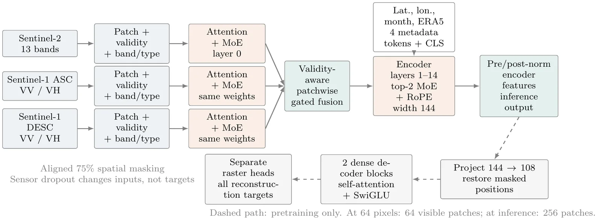

01

MEOX: compact multimodal EO with experts
A validity-aware masked autoencoder that fuses Sentinel-2, ascending and descending Sentinel-1, and environmental metadata while remaining compact enough for practical experimentation.